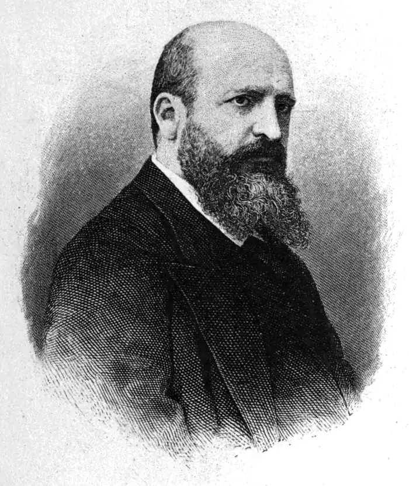

Педро Антоніо де Аларкон і Аріса — іспанський письменник, поет, драматург і журналіст. Громадський діяч, депутат Кортесов. Майже всі його твори носять суб'єктивний характер і є в деякому роді автобіографії. Чудовий лірик, романтик і фейлетоніст: в його творах відбиваються душевна теплота, природність і народний дух. Особливо вдалі його гумористичні та легкі сатиричні вірші, а також прозові речі.
Народився 10 березня 1833 г., Гвадикс, Іспанія в сім'ї благородних батьків, які під час війни за незалежність втратили все стан. Призначався до вступу в духовне звання і виховувався в семінарії свого рідного міста. Слухав також протягом короткого часу лекції юриспруденції та філософії в Гранадському університеті, але природна схильність зробила його літератором і поетом. У 1853 р він розлучився з батьками, щоб жити в Кадісі журнальної роботою.
Коли в 1854 р спалахнула революція, де Аларкон відправився в Мадрид, де скоро став відомим і зайняв визначне становище як ватажка антібурбонской демократичної Colonia granadina. У 1859 р брав участь в африканському поході під начальством О'Доннелл. У 1863 р подорожував по Італії і Франції. У 1864 р був депутатом від Гвадікса в кортесах, в 1868 р брав участь в революції і в битві при Алколее. Аларкон спочатку друкував в різних журналах і газетах лише статті політичного і літературного змісту, ряд з яких звернув на себе загальну увагу. У 1859 році вийшла перша збірка його повістей і оповідань "Cantos, articulos y novelas", який зміцнив за ним славу одного з перших романістів Іспанії. Великий успіх мала його книга "Diario de un testigo de la guerra de Africa" (1860), за якою послідували описи подорожей "De Madrid à Nàpoles" (1861), "La Alpujarra" (1874), "Viajes por España" (1883 ). Згодом Аларкон написав кілька великих романів, які на батьківщині користуються великим успіхом. Як романіст він поєднує в собі кращі риси старих іспанців — багата уява, тонку спостережливість і гумор — з розвиненим розумом і смаком сучасного європейця. Кращим його твором вважається "El sombrero de très picos" (1874) — блискуча картинка провінційного побуту, написана з чисто іспанським штибом. — "El Escàndalo" (1875) — релігійно-філософський роман, зробився предметом пристрасних нападок, 10 видань за 12 років; — "La pródiga", "El capitan Veneno" (1881) — "El niño de la bola" (1880), вважається кращим з них. Ліричні твори зібрані в книзі "Poesias serias y humoristicas" (1870), Збірники його критичних етюдів і дотепних фейлетонів з'явилися під заголовками "Amores y amorios" (1875); "Cosas que fueron" (1871); "Novelas cortas" (1884); "Juicios literanos y artisticos" (1883). Для сцени Аларкон Хіба ж не писав з тих пір, як його перша драма, "El hijo prodigo" (1857), завдяки підступам його літературних ворогів провалилася з великим шумом. У 1884 видав свою літературну заповіт "Historia de mis libros" і з тих пір більше не брався за перо. Помер 19 липня 1891 г., Вальдеморо, Іспанія